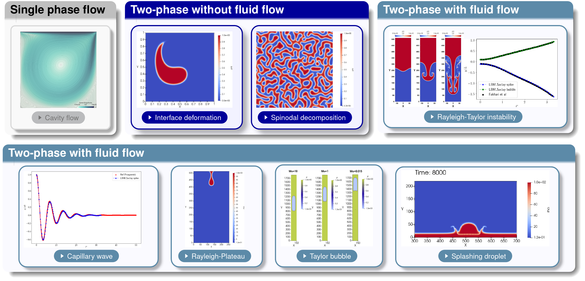

Practice of two-phase flows with test cases of run_training_lbm
Introduction
Introduction
This section presents an overview of folder run_training_lbm to start practicing two-phase flows with LBM_Saclay. Those test cases are used in the LBM training session of 1) SMEMaG doctoral school ADUM and 2) Master of Sciences Sorbonne University SSU. Most of them appear in publications to validate new LBM numerical schemes or new two-phase models. Several examples of .ini files are contained in directory run_training_lbm. They run with the kernel NSAC_Comp which implements the Model of Navier-Stokes/Conservative Allen-Cahn (CAC)/Composition. Those input datafiles use several options or different values to help users for making their own test case. It is supposed that you run the test cases on ORCUS (see First simulations on ORCUS: example with GPU partition). Once the job is complete, the output files must be downloaded on your local computer and post-processed with paraview. Few examples of single-phase and two-phase flows are presented in Fig. 29.
Table of content
Direct access
{kind=link}

Fig. 29 Overview of two-phase simulations contained in folder run_training_lbm
List of test cases in run_training_lbm
List of test cases
The two-phase model can easily degenerate to single-phase flows. This is the reason why the first two test cases compare LBM_Saclay results with well-known solutions of “lid-driven cavity flows” and “Poiseuille flows”.
Table 6 Single-phase test cases Name of test case
Equations
Comparisons
TestCase01_LidDrivenCavityFlow
Navier-Stokes
Benchmark with literature
TestCase02_Poiseuille_Water
Navier-Stokes
Analytical solution
Those test cases check the phase-field equation
Table 7 List of test cases of Two-phase without fluid flows Name of test case
Equations
Comparisons
TestCase03_Zalesak-Disk2D
Phase-field
Initial condition
TestCase04_Deformation-Vortex2D
Phase-field
Benchmark Cahn-Hilliard & Allen-Cahn
TestCase05_Spinodal-Decomposition2D
Phase-field
–
TestCase06_Stefan-Problem
Phase-field/Composition
Analytical solution
Two-phase test cases with fluid flow
Name of test case |
Equations |
Comparisons |
|---|---|---|
TestCase07_Double-Poiseuille |
Navier-Stokes/Phase-field |
Analytical solution |
TestCase08_Rayleigh-Taylor2D |
Navier-Stokes/Phase-field |
Benchmark with literature |
TestCase09_Capillary-Wave2D |
Navier-Stokes/Phase-field |
Analytical solution |
TestCase10_Falling-Droplet2D |
Navier-Stokes/Phase-field |
– |
TestCase11_Rising-Bubble2D |
Navier-Stokes/Phase-field |
– |
TestCase12_Taylor-Bubble2D |
Navier-Stokes/Phase-field |
– |
TestCase13_Splashing-Droplet2D |
Navier-Stokes/Phase-field |
– |
TestCase14_Dam-Break2D |
Navier-Stokes/Phase-field |
– |
Two-phase with fluid flow & composition effect
Name of test case |
Equations |
Comparisons |
|---|---|---|
Analytical_Profile1 |
Navier-Stokes/Phase-field/Composition |
Analytical solution |
Analytical_Profile2 |
Navier-Stokes/Phase-field/Composition |
Analytical solution |
Coalescence |
Navier-Stokes/Phase-field/Composition |
– |
Falling-Droplet |
Navier-Stokes/Phase-field/Composition |
– |
Rising_Bubble |
Navier-Stokes/Phase-field/Composition |
– |
Two-phase interacting with a solid phase
Name of test case |
Equations |
Comparisons |
|---|---|---|
TestCase16_Contact-Angle |
Navier-Stokes/Phase-fields |
– |
TestCase17a_Hydrophobic-Solid |
Navier-Stokes/Phase-fields |
– |
TestCase17b_Vertical-Wall |
Navier-Stokes/Phase-fields |
– |
TestCase18_Container-Splash |
Navier-Stokes/Phase-fields |
– |
TestCase19_Static-Container-Hole |
Navier-Stokes/Phase-fields |
– |
TestCase20_Moving-Container-Hole |
Navier-Stokes/Phase-fields |
– |
Parameters in S.I. units
Parameters in S.I. units
Most of input values in the .ini files correspond to dimensionless parameters of water-air or oil-air two-phase systems. Their parameters in SI units are presented in Tables Water – Air properties and Olive oil – Air properties below.
Name |
Symbol |
Value |
Dimension |
|---|---|---|---|
Water density |
\(\rho_{l}\) |
\(998.29\) |
kg/m \(^{3}\) |
Kinematic viscosity |
\(\nu_{l}\) |
\(1.003\times10^{-6}\) |
m \(^{2}\)/s |
Air density |
\(\rho_{a}\) |
\(1.204\) |
kg/m \(^{3}\) |
Kinematic viscosity |
\(\nu_{a}\) |
\(1.56\times10^{-5}\) |
m \(^{2}\)/s |
Surface tension |
\(\sigma\) |
\(7.28\times10^{-2}\) |
N/m |
Gravity |
\(g\) |
\(9.81\) |
m/s \(^{2}\) |
Dynamic viscos water |
\(\eta_{l}\) |
\(10^{-3}\) |
Pa.s |
Dynamic viscos air |
\(\eta_{a}\) |
\(1.878\times10^{-5}\) |
Pa.s |
Density ratio |
\(\rho_{l}/\rho_{a}\) |
829.14 |
– |
Dyn viscos ratio |
\(\eta_{l}/\eta_{a}\) |
53.33 |
– |
Name |
Symbol |
Value |
Dimension |
|---|---|---|---|
Oil density |
\(\rho_{l}\) |
\(911.4\) |
kg/m \(^{3}\) |
Kinematic viscosity |
\(\nu_{l}\) |
\(9.216\times10^{-5}\) |
m \(^{2}\)/s |
Air density |
\(\rho_{a}\) |
\(1.225\) |
kg/m \(^{3}\) |
Kinematic viscosity |
\(\nu_{a}\) |
\(1.618\times10^{-5}\) |
m \(^{2}\)/s |
Surface tension |
\(\sigma\) |
\(0.032\) |
N/m |
Gravity |
\(g\) |
\(9.81\) |
m/s \(^{2}\) |
Dynamic viscos oil |
\(\eta_{l}\) |
\(0.08399988\) |
Pa.s |
Dynamic viscos air |
\(\eta_{a}\) |
\(1.983\times10^{-5}\) |
Pa.s |
Density ratio |
\(\rho_{l}/\rho_{a}\) |
744 |
– |
Dyn viscos ratio |
\(\eta_{l}/\eta_{a}\) |
4236 |
– |
Types of files in run_training_lbm
Types of files
The folder run_training_lbm contains several classical test cases of two-phase flows. They are all based on the Model of Navier-Stokes/Conservative Allen-Cahn (CAC)/Composition, but they differ by the use of different initial conditions, boundary conditions and values of parameters. The parameter values of those test cases are representative of various dimensionless numbers (Re, Bo, Mo, At, etc.) and for some of them, comparisons are performed with analytical solutions or well-known benchmarks.
Types of file inside the folder
Several types of files appear in the directory run_training_lbm. Besides the .ini input file of LBM_Saclay, several files are useful for 1) deriving the dimensionless input parameters, 2) post-processing the simulation outputs and 3) describing the test case.
The test case is described inside a “Readme” file with the suffix .txt. Sometimes a jupyter notebook (extension .ipynb) is present inside the directory. When the test case compares the numerical solution with one solution of reference (benchmark or analytical solution), one or several files with extensions .dat or .csv are used in a python script (extension .py) or in the jupyter file. Finally, when the post-processing with paraview requires many commands, a state file for paraview (suffix .pvsm) can be set in the directory. A summary of those files are presented in the Table below.
Table 13 Types of files Extension
Description
Command
.iniInput files for LBM_Saclay
LBM_saclay inputfilename.ini
.pypython scripts for Pre- & Post-Processing
python name.py
.ipynbJupyter notebook for validation sheets
jupyter notebook name.ipynb
.pvsmState file for paraview
in paraview click “load state”
.txtReadme text file
use your favorite editor
.csvor.datAscii datafiles for comparisons
Used in
.py&.ipynbscripts
Section author: Alain Cartalade